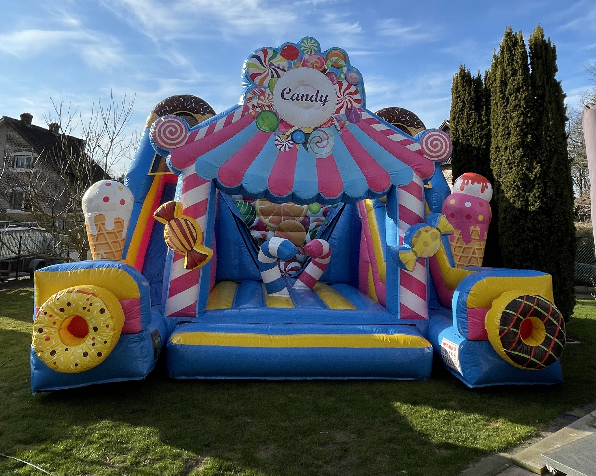

Wil je wegdromen in de wondere wereld van de allemaal snoepjes?
Dan is de Candy een sprinkasteel voor jou.
Met de Candy heb je veel spring, klim, glij en klauter plezier.
Geniet van de mooie zuurstokken, snoepjes, ijsjes, donuts, de pragtige tekeningen en de grote glijbaan op het kasteel.
Leef je uit en geniet van de vele obstakels voor over te klauteren.
Zeer zeker een eyecatcher voor een communie, huwelijk, verjaardag of eender ander feest.
de Candy heeft een grondoppervlakte van +- 6m op 6m en hij is +- 5m hoog.
minimum doorgang van 1m voorzien.
1 dag: €130
2 dagen: €210
(per bijkomende dag €60 extra.)
in deze prijs wordt deze geleverd aan huis, geplaatst, verankerd en terug afgebroken en opgehaald in
Maasmechelen.
Daarbuiten meerprijs op aanvraag.
